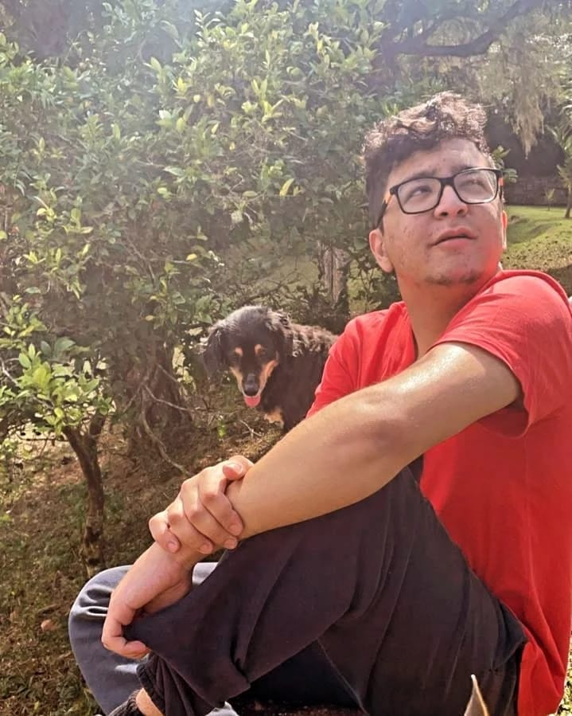

Apresentação

Vinícius Konishi Gregório
Contato: vinicius.konishi.gregorio@gmail.com | WhatsApp: (12) 99145-4087
Mini biografia: Sou um estudante de tecnologia apaixonado por desenvolvimento web. Atualmente cursando técnico em Informática, busco oportunidades para aplicar meus conhecimentos em projetos reais. Gosto de aprender novas tecnologias e trabalhar em equipe para criar soluções inovadoras. Meu foco é em back-end, mas estou explorando front-end também.
Formação Acadêmica
- Ensino Médio Técnico em Informática - Univap Centro, 2021 - 2023
- Desenvolvimento de Software Multiplataforma - Fatec Prof. Jessen Vidal, 2025 - presente
Cursos Complementares e Certificações
Projetos Desenvolvidos
Competências Técnicas e Interpessoais
Técnicas
- HTML
- CSS
- JavaScript
- Git
- MySQL
- Python
- Java
Soft Skills
- Comunicação
- Organização
- Trabalho em Equipe